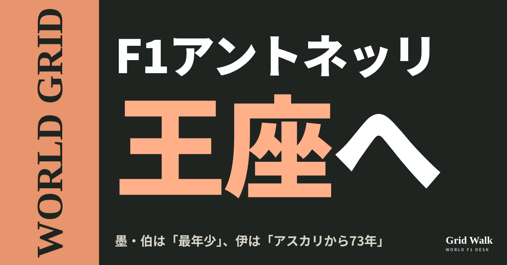
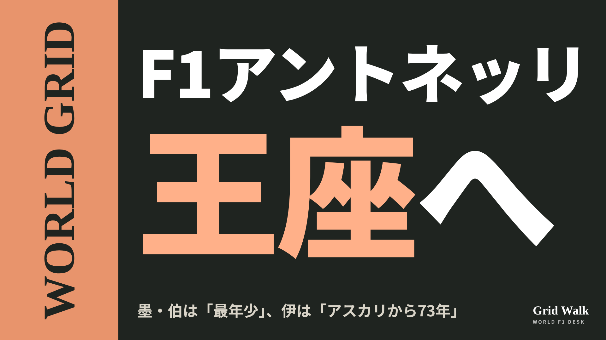

<meta charset="utf-8"><title>メキシコ王座の予告 note貼り付け</title>
<style>
/* one column of numbered paste steps; text steps vs image steps differ by marker */
:root{--bg:#F5F4F0;--card:#FFFFFF;--ink:#1D2321;--mute:#5F665F;--line:#DCDAD2;--btn:#1F5FBF;--btnok:#2E8B4F;--img:#E9F3EC;--imgink:#22663B;--sans:'IBM Plex Sans JP','Hiragino Sans','Noto Sans JP',sans-serif}
@media (prefers-color-scheme:dark){:root:not([data-theme="light"]){--bg:#171A19;--card:#202423;--ink:#ECEDE8;--mute:#A3AAA2;--line:#343937;--btn:#4D8BE6;--btnok:#3FA866;--img:#1E2C23;--imgink:#8FD3A6;color-scheme:dark}}
:root[data-theme="dark"]{--bg:#171A19;--card:#202423;--ink:#ECEDE8;--mute:#A3AAA2;--line:#343937;--btn:#4D8BE6;--btnok:#3FA866;--img:#1E2C23;--imgink:#8FD3A6;color-scheme:dark}
body{background:var(--bg);color:var(--ink);font-family:var(--sans);font-size:15px;line-height:1.75;padding:20px 16px 60px}
main{max-width:680px;margin:0 auto;display:grid;gap:28px}
header h1{font-size:22px;margin:0 0 6px;text-wrap:balance}
header p{margin:0;color:var(--mute);font-size:14px}
nav{display:flex;gap:8px;flex-wrap:wrap;margin-top:12px}
nav a{border:1px solid var(--line);border-radius:999px;padding:4px 14px;color:var(--ink);text-decoration:none;font-size:14px;background:var(--card)}
.part h2{font-size:18px;line-height:1.5;margin:0 0 12px;text-wrap:balance;display:flex;gap:10px;align-items:baseline;flex-wrap:wrap}
.tag{font-size:13px;background:var(--ink);color:var(--bg);border-radius:6px;padding:1px 9px}
.steps{list-style:none;margin:0;padding:0;display:grid;gap:12px}
.st{background:var(--card);border:1px solid var(--line);border-radius:12px;padding:12px;min-width:0}
.hd{display:flex;align-items:center;gap:8px;margin-bottom:8px}
.no{width:26px;height:26px;border-radius:50%;background:var(--btn);color:#fff;display:inline-flex;align-items:center;justify-content:center;font-size:13px;font-weight:700;flex:0 0 26px}
.im .no{background:var(--btnok)}
.hd em{font-style:normal;font-size:12px;background:var(--img);color:var(--imgink);border-radius:6px;padding:0 8px}
.bx{font-size:13.5px;line-height:1.7;border:1px solid var(--line);border-radius:8px;padding:8px 10px;max-height:110px;overflow:auto;overflow-wrap:anywhere}
.bx.tall{max-height:150px}.bx p{margin:0 0 6px}.bx h2{font-size:14px;margin:8px 0 4px}.bx a{color:var(--btn)}
.st img{display:block;width:100%;max-width:100%;border:1px solid var(--line);border-radius:8px}
.sub{font-size:12.5px;color:var(--mute);margin:6px 0 0}
.cp{width:100%;margin-top:8px;padding:12px;border:0;border-radius:10px;background:var(--btn);color:#fff;font:600 15px var(--sans);cursor:pointer}
.cp.ok{background:var(--btnok)}.cp.dl{background:var(--btnok)}.cp:focus-visible{outline:3px solid var(--ink);outline-offset:2px}
.xh{font-size:15px;margin:20px 0 10px}
.fb{font-size:13px;line-height:1.7;margin:8px 0 0;padding:8px 10px;border-radius:8px;background:var(--img);color:var(--imgink)}
.opts{display:grid;grid-template-columns:repeat(auto-fill,minmax(240px,1fr));gap:10px}
.opt{min-width:0}.opt img{display:block;width:100%;border:1px solid var(--line);border-radius:8px}
.ol{display:flex;align-items:center;gap:8px;margin-top:6px}.ol b{font-size:13px;flex:0 0 auto}.ol .on{font-size:12.5px;color:var(--mute);flex:1;min-width:0}.ol .cp{width:auto;flex:0 0 auto;padding:9px 14px}.ol .cp{margin:0;padding:9px}
.toast{font-size:13px;color:var(--mute);margin-top:6px}
</style>
<main><header><h1>メキシコ王座の予告 note貼り付け</h1><p>いま公開済みは1本です。青い番号は文章、緑は画像です。</p><nav><a href="#p1">1</a></nav></header><section class="part" id="p1"><h2><span class="tag">WORLD GRID</span>アントネッリ王座へ 墨・伯は「最年少」、伊は「アスカリから73年」</h2><p class="sub">サイトに公開：15:21</p><ol class="steps">
<li class="st im"><div class="hd"><span class="no">1</span><b>見出し画像</b><em>画像</em></div><button class="cp dl" data-img="img/mexico-title-preview-20261029.png" data-name="mexico-title-preview-20261029_見出し画像.png">ダウンロード</button></li>
<li class="st"><div class="hd"><span class="no">2</span><b>タイトル</b></div><div class="bx" id="p1t">アントネッリ王座へ 墨・伯は「最年少」、伊は「アスカリから73年」</div><button class="cp" data-plain="p1t">タイトルをコピー</button></li>
<li class="st"><div class="hd"><span class="no">3</span><b>本文</b></div><div class="bx tall" id="p1r"><p>11月1日のメキシコシティGPで、アントネッリ（メルセデス）は2点（9位）を取れば、ほかの誰の結果にも関係なく初めての王座が決まります。各国の記事は、同じ「王座目前」でも前に出す数字が違いました。メキシコやブラジルは「史上最年少」、イタリアは「アスカリから73年」。地元メキシコには、もう一つの節目も重なります。</p><p>各国の見出しの違いと、元の記事へのリンクはサイトで → <a href="https://f1gridwalk.github.io/lens/mexico-title-preview-20261029/?utm_source=note&amp;utm_campaign=mexico-title-preview-20261029">https://f1gridwalk.github.io/lens/mexico-title-preview-20261029/?utm_source=note&amp;utm_campaign=mexico-title-preview-20261029</a></p><p>10位以下の場合も含めた条件は、前回のコラム（https://f1gridwalk.github.io/lens/antonelli-title-mexico-20261026/ ）とDEEP（https://f1gridwalk.github.io/deep/champion-when/ ）で。</p><h2>見出しに「最年少」</h2><p>メキシコのPublimetroは、感嘆符つきで「メキシコで、F1最年少の王者が誕生するかもしれない！」。UnoTVは、決まれば20歳68日で、2010年のセバスチャン・ベッテル（23歳134日）の記録を破ると書きました。ブラジルのExame、オーストリアのSpeedweekも同じ「20歳68日」です。</p><p>メルセデス公式サイトの生年月日から数えても、11月1日は20歳68日。ベッテルの記録はギネス世界記録で23歳134日ですが、Exameは「23歳133日」と1日ずれています。</p><p>イギリスのSky Sportsも「20歳で史上最年少の世界王者」とし、ラッセルとハミルトンの可能性は「理論上のもの」。オランダのGPFansも見出しは「史上最年少」です。</p><h2>イタリアは「アスカリから73年」</h2><p>イタリアが挙げた数字は「最年少」ではありません。Tuttosportの見出しは、オースティンの勝利を受けて「キミ・アントネッリ、王座を引き寄せる勝利！ メキシコで早くも王者に、もし…」。本文は、決まれば「F1で3人目のイタリア人王者になる。アルベルト・アスカリから73年後に」。Il Fatto Quotidianoも1953年のアスカリを挙げ、王座は「時間の問題にすぎない」。この2紙に、ベッテルの記録や「最年少」は出てきません。</p><p>通信社ANSAは「本当に変わらないのはボローニャの20歳だけ、というシーズン」と書き、フェラーリのエンジンは「メキシコシティの2200mでさらに苦しむ」としました。高地の話はDEEP（https://f1gridwalk.github.io/deep/mexico-altitude/ ）で。</p><h2>メキシコは「ペレスの300戦目」と重ねる</h2><p>キャデラックのペレスは、予定どおり走ればこれが300戦目のグランプリです。Potosinoticias（El Economistaの情報）は「メキシコがアントネッリの戴冠を待つ」という見出しで、戴冠が「エルマノス・ロドリゲス・サーキットの人気者」ペレスの300戦目と重なると書きました。オースティンで19位のペレスは、こう話します。</p><blockquote><p>「（メキシコは）自分のファンの前で走るのが、いつも信じられないほど特別な場所です。今年は300戦目のグランプリを祝うので、さらに意味があります」（ペレス、EFE通信／スペイン）</p></blockquote><h2>本人、ウォルフ、ライバルの言葉</h2><blockquote><p>「一瞬一瞬を楽しもうと思います。ずっと記憶に残る瞬間だから」（アントネッリ、dpa通信／ドイツ）</p></blockquote><blockquote><p>「これは9年がかりの仕事です」「去年、9戦もポイントがなかったのを覚えています」（ウォルフ代表、伊Sky Sportに。Il Fatto Quotidiano／イタリア）</p></blockquote><p>8位のラッセルはdpaに「とても悪い日だった。なぜかはよく分からない」「メキシコでは、もっと強くなって戻らないと」。4位のハミルトンはCrash.netに「メキシコでは、セッティングで間違えたところを良くできれば」。</p><p>表彰式前の控室では、2位のルクレールが「じゃあ、（決まるのは）たぶんメキシコだね？」、3位のフェルスタッペンが「テキーラ！」。ルクレールが「ブラジルには、いい状態では来られないね」と続け、フェルスタッペンは「キミはサンパウロGPを欠場だ！」と冗談を言った、と英タブロイド紙エクスプレスとイタリアのLiberoが伝えています。メキシコで王座を祝う夜がブラジルに響く、という冗談だとLiberoは書いています。</p><p>一方、オランダのRacingNews365は、マレーシアで入れたメルセデスの最新アップデートは期待した効果が出なかったと書いています（要約：https://f1gridwalk.github.io/news/nl-racingnews365-mercedes-worries-grow/ ）。</p><p>編集部としては、記録を数える国、待った年月を数える国、地元の節目と重ねる国と、見出しの数字が分かれたのが面白いと見ています。</p><p><strong>アントネッリが王座を決めたら、見出しにふさわしいのは「最年少」と「アスカリから73年」、どちらだと思いますか？</strong></p><p>━━━━━━━━━━</p><p><strong>F1 Grid Walk では、世界のF1ニュースを毎日日本語でまとめています。</strong></p><p>海外の記事の要約を、毎日載せています。</p><p><a href="https://f1gridwalk.github.io/">https://f1gridwalk.github.io/</a></p><p>ほかの海外記事も読みたい方は、F1 Grid Walkへ。</p><p><a href="https://f1gridwalk.github.io/lens/mexico-title-preview-20261029/">https://f1gridwalk.github.io/lens/mexico-title-preview-20261029/</a></p><p>━━━━━━━━━━</p><p><a href="https://www.publimetro.com.mx/deportes/2026/10/25/mexico-puede-coronar-al-campeon-mas-joven-de-f1-kimi-antonelli-arrasa-en-austin/">出典：Publimetro（メキシコ）</a></p><p><a href="https://www.unotv.com/deportes/gp-de-mexico-2026-kimi-antonelli-a-un-paso-de-ser-el-campeon-mas-joven-de-la-f1-que-necesita-para-coronarse/">出典：UnoTV（メキシコ）</a></p><p><a href="https://potosinoticias.com/2026/10/26/mexico-reserva-consagracion-para-kimi-antonelli/">出典：Potosinoticias（El Economista）（メキシコ）</a></p><p><a href="https://www.infobae.com/espana/agencias/2026/10/26/checo-perez-ahora-ya-tengo-ganas-de-celebrar-en-mexico-mi-gran-premio-numero-300/">出典：EFE（Infobae）（スペイン）</a></p><p><a href="https://exame.com/esporte/formula-1-o-que-kimi-antonelli-precisa-para-ser-campeao-no-gp-do-mexico/">出典：Exame（ブラジル）</a></p><p><a href="https://www.speedweek.com/en/a/formula-1/kimi-antonelli-formula-1-world-champion-mexico">出典：Speedweek（英語版）（オーストリア）</a></p><p><a href="https://www.skysports.com/f1/news/13603683/kimi-antonelli-f1-title-permutations-how-mercedes-driver-can-win-2026-formula-1-drivers-championship-at-mexico-city-gp-on-sunday">出典：Sky Sports（イギリス）</a></p><p><a href="https://www.gpfans.com/nl/f1-nieuws/1092019/zo-wordt-antonelli-in-mexico-de-jongste-wereldkampioen-formule-1-ooit/">出典：GPFans（オランダ版）（オランダ）</a></p><p><a href="https://www.tuttosport.com/news/formula-1/2026/10/26-152166970/kimi_antonelli_vittoria_mondiale_sar_campione_gi_in_messico_se">出典：Tuttosport（イタリア）</a></p><p><a href="https://www.ilfattoquotidiano.it/2026/10/26/antonelli-titolo-formula1-messico-notizie/8550169/">出典：Il Fatto Quotidiano（イタリア）</a></p><p><a href="https://www.ilfattoquotidiano.it/2026/10/26/mi-ricordo-lanno-scorso-antonelli-per-9-gare-senza-punti-e-le-critiche-perche-era-troppo-giovane-parla-toto-wolff/8550204/">出典：Il Fatto Quotidiano（イタリア）</a></p><p><a href="https://www.ansa.it/sito/notizie/sport/2026/10/26/conto-alla-rovescia-per-antonelli-wolff-finiamo-il-lavoro-in-messico_afa8e702-8164-48dc-98d3-6ee62fa366f5.html">出典：ANSA（イタリア）</a></p><p><a href="https://sports.yahoo.com/articles/antonelli-wants-clinch-maiden-f1-123333389.html">出典：dpa（Yahoo Sports）（ドイツ）</a></p><p><a href="https://www.crash.net/f1/news/1108518/1/lewis-hamilton-reveals-mistake-cost-him-podium-us-grand-prix">出典：Crash.net（イギリス）</a></p><p><a href="https://www.aol.co.uk/articles/kimi-antonelli-tipped-miss-upcoming-123300000.html">出典：Express（AOL）（イギリス）</a></p><p><a href="https://www.liberoquotidiano.it/news/sport/49456056/kimi-antonelli-leclerc-verstappen-sfottono-chissa-che-condizioni/">出典：Libero Quotidiano（イタリア）</a></p><p><a href="https://racingnews365.nl/mercedes-zorgen-nemen-toe-ondanks-aanstaande-f1-titels">出典：RacingNews365（オランダ語版）（オランダ）</a></p><p><a href="https://mercedesamgf1.com/news/kimi-antonelli-everything-you-need-to-know">出典：メルセデス公式（イギリス）</a></p><p><a href="https://www.guinnessworldrecords.com/world-records/youngest-formula-one-world-champion">出典：ギネス世界記録（イギリス）</a></p></div><button class="cp" data-rich="p1r">本文をコピー</button></li>
<li class="st"><div class="hd"><span class="no">4</span><b>ハッシュタグ</b></div><div class="bx" id="p1h">#F1 #F1jp #アントネッリ #メルセデス #メキシコシティGP #セルジオペレス #トトウォルフ #WORLDGRID #海外F1</div><button class="cp" data-plain="p1h">タグをコピー</button></li>
</ol><h3 class="xh">X</h3><ol class="steps">
<li class="st im"><div class="hd"><b>X用の画像</b><em>画像</em></div><button class="cp dl" data-img="img/x_mexico-title-preview-20261029.png" data-name="x_mexico-title-preview-20261029.png">ダウンロード</button></li>
<li class="st"><div class="hd"><b>① noteをシェアするときの文</b></div><div class="bx" id="p1x0">メキシコシティGPでアントネッリの王座は決まる？ メキシコやブラジルは「史上最年少」、イタリアは「アスカリから73年」。国によって見出しに置く数字が違いました。各国の書き方とウォルフ、ペレスの言葉をnoteにまとめました #F1jp #メキシコGP</div><button class="cp" data-plain="p1x0">コピー</button></li>
<li class="st"><div class="hd"><b>② ①への返信</b></div><div class="bx" id="p1x1">ほかの海外記事も読みたい方は、F1 Grid Walkへ。
https://f1gridwalk.github.io/lens/mexico-title-preview-20261029/?utm_source=x&amp;utm_campaign=mexico-title-preview-20261029</div><button class="cp" data-plain="p1x1">コピー</button></li>
<li class="st"><div class="hd"><b>③ ②への返信</b></div><div class="bx" id="p1x2">毎日の海外F1ニュースは、日本語でこちらにまとめています。
https://f1gridwalk.github.io/</div><button class="cp" data-plain="p1x2">コピー</button></li>
</ol></section></main><script>
function done(b,msg){const t=b.dataset.t||b.textContent;b.dataset.t=t;b.classList.add('ok');b.textContent=msg||'コピーしました';setTimeout(()=>{b.classList.remove('ok');b.textContent=t},2000)}
function selectEl(el){const r=document.createRange();r.selectNodeContents(el);const s=getSelection();s.removeAllRanges();s.addRange(r)}
async function rich(el,b){
  try{await navigator.clipboard.write([new ClipboardItem({'text/html':new Blob([el.innerHTML],{type:'text/html'}),'text/plain':new Blob([el.innerText],{type:'text/plain'})})]);done(b);return}catch(e){}
  selectEl(el);let ok=false;try{ok=document.execCommand('copy')}catch(e){}
  if(ok){getSelection().removeAllRanges();done(b)}else{done(b,'選択しました。コピーしてください')}}
async function plain(el,b){
  try{await navigator.clipboard.writeText(el.innerText);done(b);return}catch(e){}
  selectEl(el);let ok=false;try{ok=document.execCommand('copy')}catch(e){}
  if(ok){getSelection().removeAllRanges();done(b)}else{done(b,'選択しました。コピーしてください')}}
let dlns=null;(async()=>{try{dlns=await window.claude?.use?.("downloads")}catch(e){dlns=null}})();
async function img(src,b){
  b.dataset.t=b.dataset.t||b.textContent;
  if(!dlns){try{dlns=await window.claude?.use?.("downloads")}catch(e){}}
  if(!dlns){b.textContent='ダウンロードできませんでした';setTimeout(()=>{b.textContent=b.dataset.t},3500);return}
  try{const blob=await fetch(src).then(r=>r.blob());b.textContent='保存の確認を開いています…';
    await dlns.save({filename:b.dataset.name,data:blob});done(b,'ダウンロードしました')}
  catch(e){const c=e&&e.code;b.textContent=c==='declined'?'キャンセルしました':c==='rate_limited'?'少し待ってからもう一度押してください':'ダウンロードできませんでした';setTimeout(()=>{b.textContent=b.dataset.t},3500)}}
document.querySelectorAll('.cp').forEach(b=>b.addEventListener('click',()=>{
  if(b.dataset.rich)rich(document.getElementById(b.dataset.rich),b);
  else if(b.dataset.plain)plain(document.getElementById(b.dataset.plain),b);
  else img(b.dataset.img,b)}));
</script>